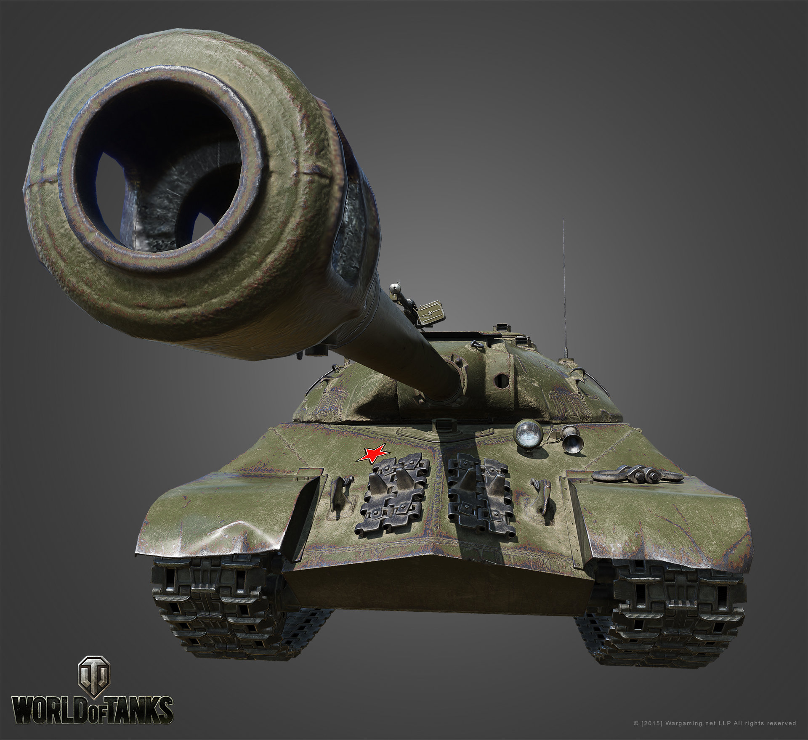

Танкист упал с гироскутера
Сегодня, приблизительно в 12 часов ночи по Московскому вечеру произошли довольно обыденные обстоятельства. Примерно в 7 утра танкист ехал играть в танки на своем гироскутере, как неожиданно ему на колесо намотался кусок спермы его друга. Он от неожиданности упал прям на дилдо.
Мы взяли интервью.
- Скажите пожалуйста, что вы почувствовали в этот момент?
- Я ехал на гироскутере к своему ноутбуку и как всегда крутил спинер, а в другой руке держал новый вейп, как неожиданно упал прямо на дилдо. Я не почувствовал его в себе, т.к. я привык к нему.
- Спасибо, Анатолий.
Наверное каждый из нас бы хотел побывать на месте Анатолия, но это все дело времени. Чтобы быть успешным как Анатолий, пройдите нашу серию пикапа "Не суй дальше, я задыхаюсь."